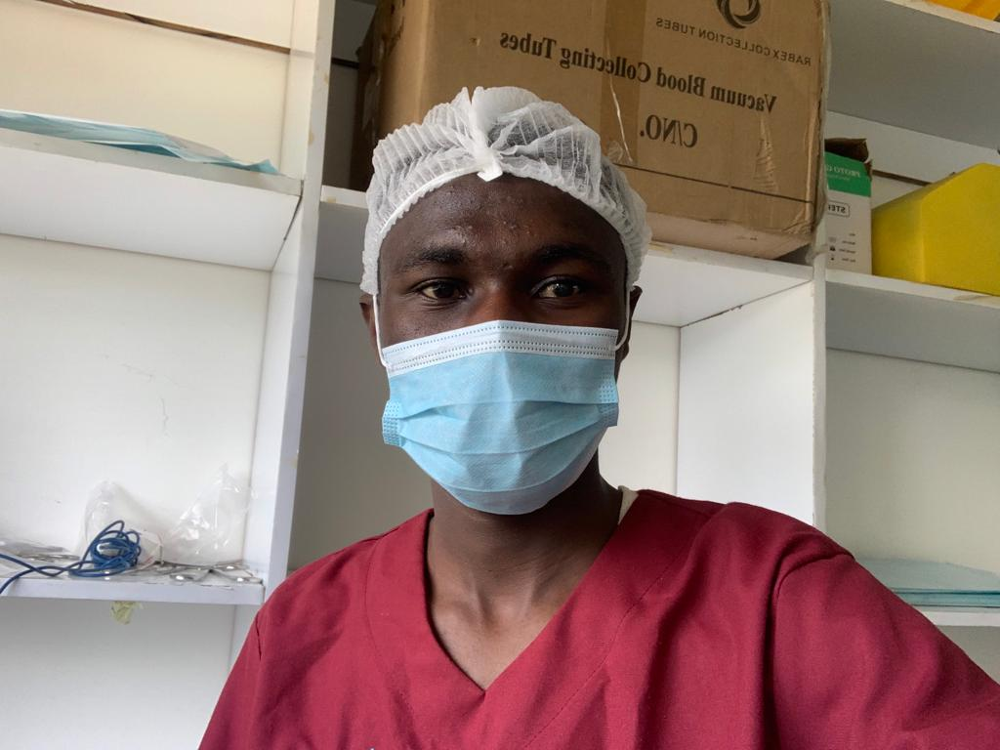

Ian Kimuhu Mukiri

- Born-
He is a Kenyan who was born on 27th June 1999 in Kiambu,Kenya.
- Schooling-
He went for E.C.D.E. learning in a couple of schools and attended Ritaya Primary School in Nyahururu for his Primary school learning. He then attended Leshau Boys' for his High School learning where he had a number of leadership positions,awards and even took the school to a known place in Mathematics Contests. He passed his K.C.S.E. and proceeded to Kenya Methodist University where he is currently doing his Undergraduate course in Medicine(MBChB).
- Career-
LOCUM in Meru Teaching and Refferal Hospital
- Passion-
Internal Medicine, Dealing with Diabetes,Rheumatic Heart Disease,Severe Acute malnutrition and diseases associated with that and Paedriatics
- Hobbies-
Playing Chess,Gaming and Envronment Conservation
- Inspirations-
He aspires quality healthcare services to marginalised people in Africa as a whole.
- Parents-
Susan Mukiri Nyambura
- Family-
Kimuhu's Family
- Awards-
President KeMU Medical Student Association 2022/2023,couple of Mathematical contests and researched the prevalence of Post surgical wounds infections at Meru Teaching and Refferal Hospital
- Contribution to society-
During COVID-19 pandemic he took part in giving moral and financial support to children from less fortunate backgrounds.
- Social Media Twitter @IanMukiri
Instagram Dr.IanMukiri
Phone Number and Whatsapp 0111747832
Images